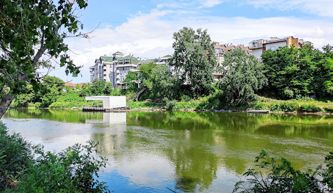

O gradu
Trstenik se nalazi u Rasinskom okrugu, smešten je na Zapadnoj Moravi. Trstenik je udaljen oko 205 km od Beograda, 115 km od Niša, 74 km od kragujevca, 60 km od Čačka, njegova nadmorska visina iznosi 170 m, a najviši vrh u toj oblasti je Samar.
Opština Trstenik prostire se na 448 kvadratnih kilometra, u plodnoj dolini Zapadne Morave, na padinama Goča i Gledećkih planina. Sam grad Trstenik nalazi se na desnoj obali Zapadne Morave, na nadomrskoj visini koja iznosi 172 m.
Iz srednjeg veka na teritoriji Trstenika ostale su nam crkve i manastiri, najpoznatiji su Ljubostinja i Veluće, a savremeno doba je ostavilo Prvu petoletku. U današnje vreme opština Trstenik poznata je po raznovrsnoj i obimnoj proizvodnji voća i povrća, kao i voćnog i loznog sadnog materija i proizvodnji mineralne vode Mivela.
Trstenik ima svoj grb, zastavu, krsnu slavu Silazak Svetog duha na apostole – Trojice. Područje opštine Trstenika naseljeno je u periodu neolita, pre 6000 godina pre nove ere, što potvrđuju arheološka nalazišta Blagotin i Stragari.
Manifestacije grada

Brojne su manifestacije koje se održavaju na teritoriji opštine Trstenik neke od njih su Takmičenje u preciznom motornom letenju, Čorbijada, Trka čamaca moravaca motkom, Prolećni dani planinara i mnoge druge manifestacije.
Oni koji vole reku i osveženje u letnjim danima odlaze na gradsku plažu, Trstenik na Moravi je spoj leta, sporta, zabave, dobrog druženja koji čine da uživate u letu i letnjim danima provedenim u Trsteniku. Jedni od činitelja dobre atmosfere na graskoj plaži jesi i trstenički slikari koji nastoje da uhvate zalazak sunca na Moravi. Najposećenija mesta u opštini Trstenik jesu svakako manastiri Ljubostinja i Veluće, zatim crkva Svete Petke na Grabovačkom brdu, ona datira iz XIV. Veka, a u samom centru Trstenika se nalazi crkva Svete Trojice.
Muzej Trstenika zanimljiv je po etnografskoj postavci, a aktivan je i seoski turizam u okolini Trstenika, raznolika priroda, zanimljivi običaji, dobra vina… privlače turiste. Ljubitelji prirode mogu posetiti i trsteničke staze na Gledićkim planinama i Goču. Preci su nam ostavili veliko materijalno, kulturno i duhovno bogatvo, a na nama je da se o tom bogatstvu staramo i da za buduće generacije očuvamo ono što imamo i ako je moguće unapredimo i razvijemo.
Trstenik je mesto na kome se mogu videti mnoga materijalna, kulturna ali i prirodna i duhovna bogatstva vredi ih posetiti i raditi na njihovom očuvanju zarad novih generacija koje će im se diviti i uživati u svim lepotama i korstima ove opštine.
Znamenitosti grada

Dolinom reke Morave
Grad je smešten na mestu proslaska i ukrštanja moravskih puteva, dolinom Zapadne Morave prolazi železnicka pruga Stalac – Kraljevo. A na oko 2 km od centra grada nalazi se turisitčko – sportski aerodrom, za koji stručnjaci kažu da se svrstava među najpogodnije u zemlji za razne vazduhoplovne potrebe. Zahvaljujući aerodromu i avionima koje poseduje moguće je panoramsko razgledanje Trstenika, njegove okoline, kao i razgledanje okolnih gradova i manastira, reka i prirodnih lepota tih krajeva.
Kultura Trstenika i okoline može se pohvaliti dugom i bogatom tradicijom. Manastir Ljubostinja kulturno je središte od velikog značaja za čitav kraj. Ljubostinja se vezuje za Jefimiju prvu srpsku pesnikinju koja je poslednje godine svog života provela u Ljubostinji. Njena čuvena Pohvala knezu Lazaru spada u najznačajnija dela srpske srednjovekovne književnosti. Bogat kulturni život Trstenika organizuju ustanove poput Narodnog univerziteta Trstenik, Narodne biblioteke Jefimija, Kulturno prosvetne zajednice i druge ustanove.